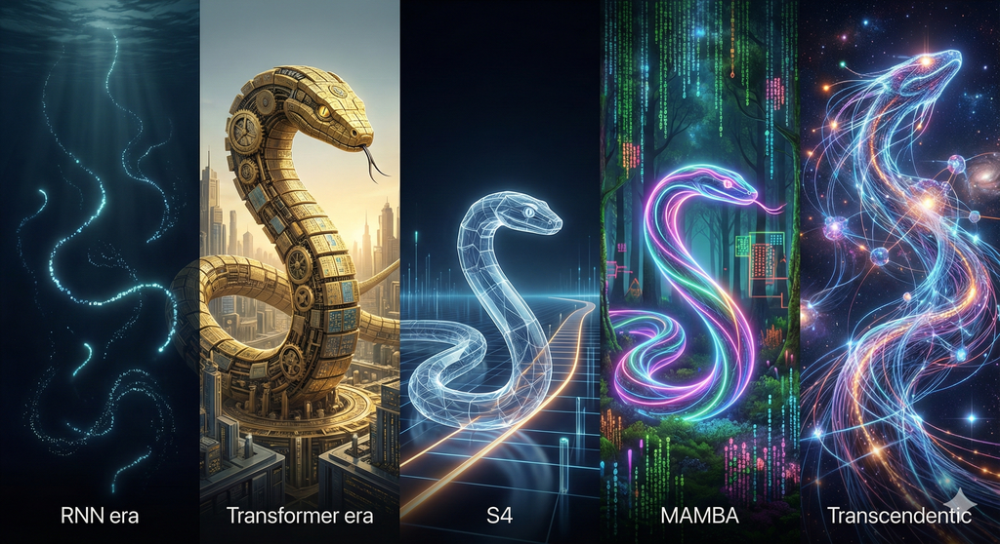

MAMBA - 포스트 트랜스포머 시대의 도래

제1부: 시퀀스 모델링의 한계와 새로운 패러다임
제1장 트랜스포머 아키텍처의 구조적 병목
- 1.1 어텐션 메커니즘의 제곱(O(N^2)) 복잡도와 연산 비용
- 1.2 KV 캐시(Key-Value Cache) 증가와 메모리 대역폭 한계
- 1.3 긴 문맥(Long Context) 처리의 효율성 저하와 추론 속도 문제
제2장 상태 공간 모델(SSM)의 재발견
- 2.1 연속 시간 시스템의 이산화(Discretization)와 순환 신경망(RNN)
- 2.2 장기 의존성 문제(Long-Range Dependency)와 HiPPO 이론
- 2.3 S4(Structured State Spaces) 대각화와 컨볼루션 기반 학습 가속
제2부: MAMBA 아키텍처의 기술적 혁신 (Mamba-1)
제3장 선택적 상태 공간(Selective SSM)
- 3.1 선형 시간 불변(LTI) 시스템의 한계와 입력 의존적(Input-Dependent) 파라미터
- 3.2 선택적 스캔(Selective Scan) 알고리즘과 정보의 압축 및 선별
- 3.3 하드웨어 인식(Hardware-Aware) 알고리즘과 GPU 메모리 계층 최적화
제4장 Mamba 시스템 구현
- 4.1 병렬 스캔(Parallel Scan)을 통한 학습 효율성 확보
- 4.2 Mamba 블록 구조 - MLP와 Attention의 통합 및 간소화
- 4.3 수치적 안정성과 재계산(Recomputation) 전략
제3부: 이론적 완성가 확장 (Mamba-2 & Variants)
제5장 Mamba-2와 구조적 상태 공간 쌍대성(SSD)
- 5.1 SSM과 선형 어텐션(Linear Attention)의 수학적 연결 (SSD 프레임워크)
- 5.2 행렬 믹서(Matrix Mixer) 이론과 블록 분해 알고리즘
- 5.3 텐서 병렬화(Tensor Parallelism) 지원과 대규모 클러스터 학습
제6장 도메인 특화 아키텍처
- 6.1 [Vision] Vision Mamba (Vim) & VSSD - 시각적 상태 공간 쌍대성과 양방향 처리
- 6.2 [Video] VideoMamba & Dual Branch - 시공간 모델링과 게이트 클래스 토큰 퓨전(GCTF)
- 6.3 Caduceus & PlantCaduceus - DNA 서열의 상보적 등변성 및 단일 세포 분석(SC-MAMBA2)
- 6.4 Mamba4Cast & Affirm - 파운데이션 모델과 적응형 푸리에 필터
- 6.5 MKL 아키텍처 - UAV 위협 탐지를 위한 Mamba-KAN-Liquid 결합 모델
제4부: 하이브리드 아키텍처와 한계 극복
제7장 순수 SSM의 한계와 하이브리드 전략
- 7.1 복사(Copying) 작업과 회상(Recall) 능력의 한계 - Mamba vs Transformer
- 7.2 Needle-in-a-Haystack (NIAH) 성능 - 하이브리드 모델의 우위
- 7.3 Jamba & Granite 4.0 - Attention-SSM 하이브리드 비율과 성능 최적화
- 7.4 MambaFormer - 희소 패리티(Sparse Parity) 학습을 위한 결합 구조
제8장 인컨텍스트 러닝(ICL)의 새로운 이론 (2025)
- 8.1 테스트 타임 특징 학습(Test-Time Feature Learning) - Mamba의 ICL 메커니즘 규명
- 8.2 단일 인덱스 모델(Single-Index Model) 학습과 비선형 게이팅의 역할
- 8.3 MambaExtend & LongMamba - 훈련 없는(Training-Free) 컨텍스트 확장과 글로벌 채널 필터링
제5부: 2025년 기술 트렌드와 미래 전망
제9장 효율성의 극대화 - MoE와 양자화
- 9.1 BlackMamba - 전문가 믹스(MoE)를 통한 추론 속도 및 비용 최적화
- 9.2 양자화(Quantization)의 난제 - 아웃라이어(Outlier) 문제와 수치 정밀도 민감성
- 9.3 최신 경량화 기법 - 분리형 스케일 양자화(DSQ)와 효율적 선택적 재구성(ESG)